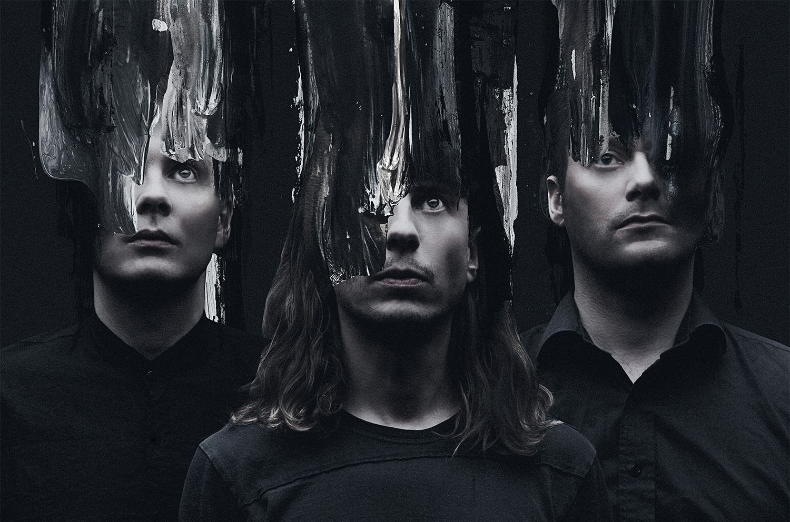
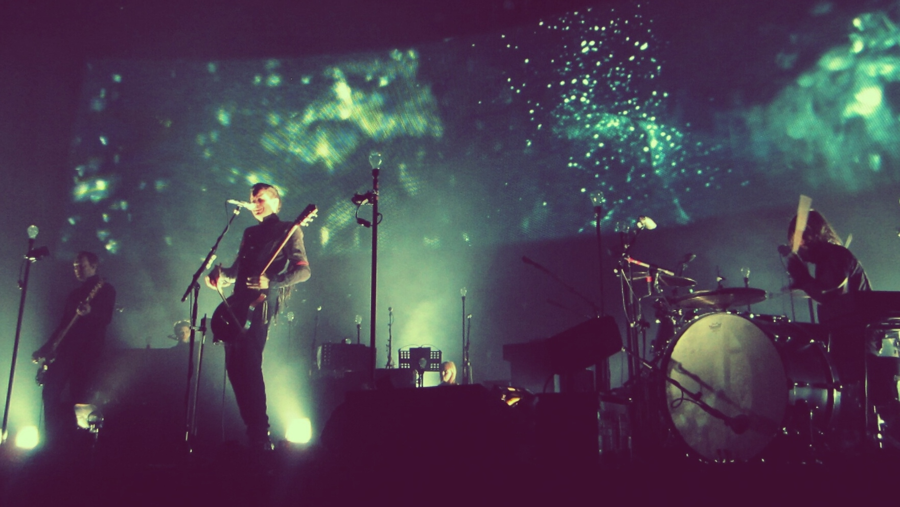

Welcome to my Sigur Ros Site
Sigur Rós is an Icelandic post-rock band from Reykjavík, active since 1994.
Known for their ethereal sound, frontman Jónsi's falsetto vocals, and their use
of bowed guitar, the band's music incorporates classical
and minimal aesthetic elements.
Current members of the band are: Jón Þór "Jónsi" Birgisson – lead vocals,
guitars, bowed guitar, keyboards, harmonica, banjo, bass guitar; and
Georg "Goggi" Hólm – bass guitar, glockenspiel, toy piano, keyboards,
backing vocals.

